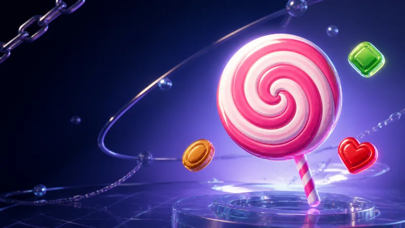

老虎機娛樂城遊戲指南老虎機攻略、原創遊戲與桌上遊戲教學
整理熱門娛樂城遊戲玩法，包含老虎機攻略、原創遊戲指南與桌上遊戲教學，幫助新手快速了解遊戲規則、倍率機制與入門重點
娛樂城遊戲指南總覽
娛樂城遊戲種類很多，從老虎機、原創遊戲到桌上遊戲，每一種玩法的節奏、規則與風險都不太一樣。晴天娛樂城推薦網整理熱門娛樂城遊戲指南，幫助新手先了解遊戲玩法，再依照自己的喜好選擇適合的平台與遊戲類型
本頁會先整理老虎機攻略、原創遊戲指南與桌上遊戲教學三大類型，後續也會陸續補上更多單款遊戲攻略與玩法解析
原創遊戲指南
原創遊戲是 Web3 娛樂城很常見的特色玩法，規則通常比老虎機更簡單，節奏也更快。常見類型包含 Mines 踩地雷、Crash 飛機、Dice 骰子、Limbo 倍率與 Plinko 彈珠遊戲。這類遊戲重點在倍率變化與出手時機，適合先了解規則後再開始
桌上遊戲教學
桌上遊戲偏向經典賭場玩法，常見類型包含輪盤、21點、百家樂與撲克類遊戲。相較於老虎機，桌上遊戲更重視規則理解、下注方式與策略判斷，適合想玩經典遊戲或想研究玩法邏輯的玩家
遊戲指南和遊戲推薦有什麼不同？
兩者的用途不一樣：一個幫你把玩法看懂，一個幫你把遊戲挑好。先看指南建立基本認知，再看推薦挑平台，順序會更順
遊戲指南
看規則、學玩法、了解機制
遊戲指南主要是介紹玩法規則、倍率機制、操作方式與新手注意事項，適合還不熟悉遊戲的玩家閱讀
- 遊戲規則與勝負判定方式
- 倍率、賠率與獎勵機制說明
- 介面操作與新手常見誤區
適合對象：還不知道這款遊戲怎麼玩的人
遊戲推薦
看排行、挑平台、找熱門遊戲
遊戲推薦則是整理不同平台上的熱門遊戲與排行，適合已經知道自己想玩哪一類遊戲，想快速比較 Stake、Rainbet、Shuffle 等平台遊戲內容的玩家
- 熱門遊戲排行與人氣整理
- 各平台遊戲庫與特色比較
- 依遊戲類型快速找到入口
適合對象：已經知道想玩什麼、要挑平台的人
娛樂城遊戲指南常見問題
新手適合先看哪一類遊戲？
新手可以先從老虎機、Mines 踩地雷或百家樂開始，這幾類遊戲規則相對直覺，比較容易快速理解基本玩法
老虎機攻略會介紹哪些內容？
老虎機攻略通常會整理遊戲主題、RTP、波動率、最高倍數、免費旋轉與特殊玩法，幫助玩家了解不同老虎機的差異
原創遊戲是什麼？
原創遊戲是 Web3 娛樂城常見的特色玩法，例如 Mines、Crash、Dice、Limbo、Plinko 等，通常規則簡單、節奏快速、倍率變化明顯
桌上遊戲跟真人娛樂一樣嗎？
不完全一樣。桌上遊戲偏向經典規則與策略玩法，真人娛樂則是透過真人荷官直播呈現。兩者可能有相同遊戲，例如百家樂、21點與輪盤，但體驗方式不同
遊戲指南會介紹 Stake、Rainbet、Shuffle 嗎？
會。遊戲指南會先介紹玩法規則，文章內再補充該遊戲可在哪些平台遊玩，例如 Stake、Rainbet、Shuffle